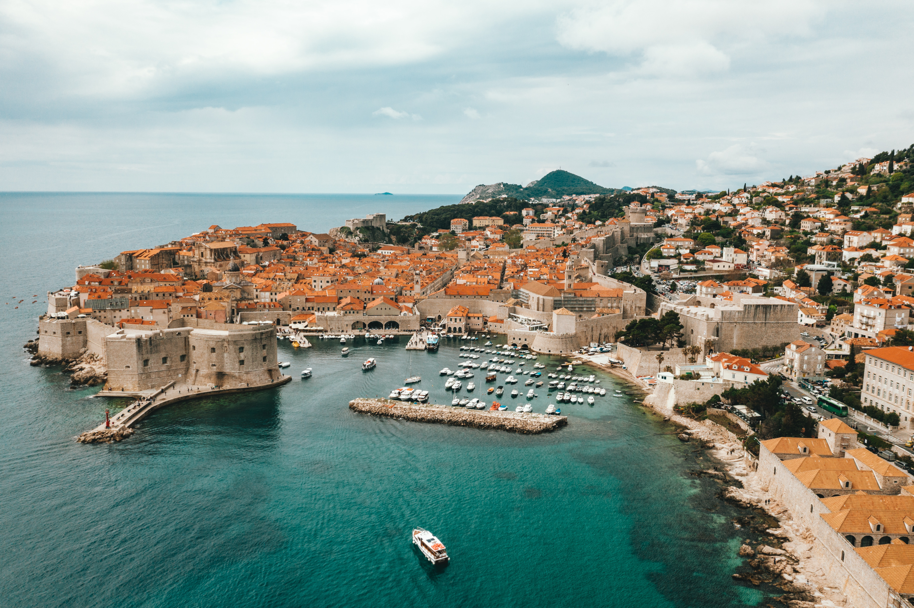
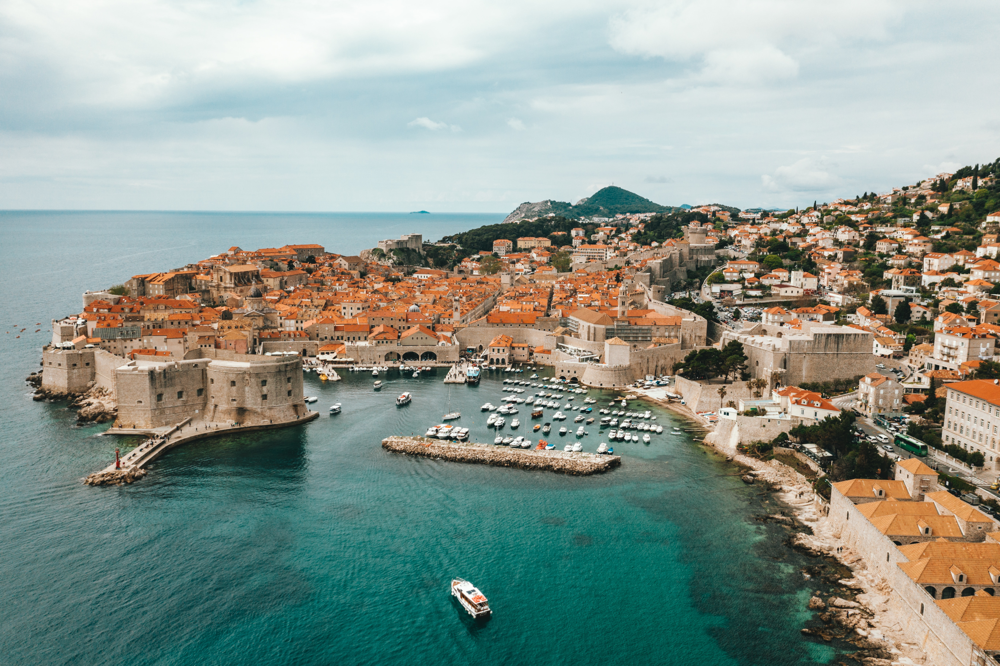
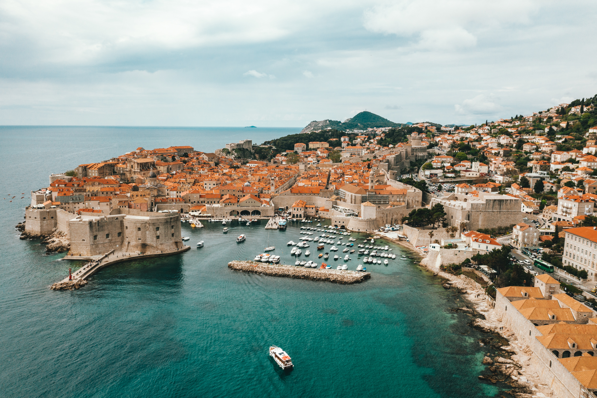

Európai időutazás: Fedezd fel a legjobb helyeket, a legjobb időpontokban!

A nyár, az év legmelegebb és legfényűzőbb évszakában, ahol a napfény arany sugarai megvilágítják a tájat és a szíveket. Ez az időszak a lehetőségek és kalandok szezonja, amikor a vágyakozás az ismeretlen tájak és új kultúrák felfedezésére hív. Európa, a kontinens gazdag történelemben, lenyűgöző tájakban és sokszínű kultúrákban gazdag, ahol minden sarkon egy új csoda vár felfedezésre.
A nyári utazások nem csupán egyszerű kiruccanások; ezek az élmények, amelyek emlékekkel, barátokkal és egyedülálló pillanatokkal gazdagítanak bennünket. Legyen szó a görög szigetek mesés panorámáiról, a spanyol éjszakai élet pezsgéséről, vagy éppen az olasz tengerpart romantikus szépségéről, a nyár ebben a részében Európa egész területén elvarázsol.
Ebben a bevezetésben meghódítjuk a nyári utazások varázsát, elkalauzolunk a festői tájakon, bepillantást engedünk a kulturális kincsek rejtelmeibe, és inspirációt kínálunk ahhoz, hogy a következő utazásod egy valódi kaland legyen. Készülj fel arra, hogy elmerülj a napfényes kalandokban és fedezz fel új világokat, ahol minden pillanatban ott rejlik az életöröm és a felfedezés izgalma. Az utazás nem csak úticél, hanem életstílus. Gyere, és csatlakozz hozzánk ebben a nyári kavalkádban!
Santorini, Görögország egyik legszebb és legikonikusabb szigete, amely lenyűgöző tájakkal, történelemmel és kultúrával várja az utazókat. Ez a vulkanikus sziget a Ciklád-szigetek csoportjához tartozik, és az Égei-tenger déli részén található. Santorini híres fehérre meszelt házairól, kék dombsoraival, romantikus naplementéiről és lenyűgöző kilátásairól a tengerre.
Az egyik első dolog, amit az ember észrevesz, amikor Santorinira érkezik, az a tradicionális görög építészet csodálatos példája. A fehér házak kék ablakkeretekkel és kupolákkal pompás kontrasztot alkotnak a mélykék ég és az Égei-tenger tiszta vizének háttérrel. A szűk sikátorok, az elágazó kis utcák és a csipkézett erkélyek egyaránt hozzájárulnak a sziget varázslatos hangulatához.
Santorini történelme gazdag és érdekes. A sziget egykoron a minószi civilizációhoz tartozott, és legendásan az Atlantisz elveszett városához kötik. A sziget mai formáját a Kr. e. 16. században bekövetkezett óriási vulkánkitörésnek köszönheti, amely két hatalmas szigetcsoportot szakított le, és létrehozta a tenger közepén elterülő hatalmas krátert, amelybe a tenger özönlött.
Összességében, Santorini Görögország egy olyan úti cél, amely egyedülálló és elbűvölő élményt kínál minden látogatónak. A lenyűgöző tájak, a romantikus naplementék és a barátságos helyiek mind hozzájárulnak ahhoz, hogy Santorini a világ egyik legkedveltebb üdülőhelye legyen.
Barcelona, Spanyolország egy varázslatos város, amely kulturális gazdagságával, történelmével és lenyűgöző atmoszférájával vonzza a világ minden tájáról érkező utazókat. Ez a katalán főváros a Földközi-tenger partján fekszik, és egyedülálló eleganciájával, modernitásával és hagyományaival bűvöli el az idelátogatókat.
Barcelona nemcsak építészeti kincseket rejt, hanem gazdag történelmi örökséggel is büszkélkedhet. A Barri Gòtic, vagyis a Gót negyed szűk sikátorai között sétálva az utazók visszarepülnek az időben, és felfedezhetik a középkori Barcelona hangulatát. A város történelmi városközpontja tele van szép templomokkal, terecskékkel és történelmi emlékekkel, amelyek mind-mind a múltba repítik az idelátogatókat.
A tengerpart és a város találkozása is egyedülálló élményt nyújt Barcelona látogatóinak. A Barceloneta negyed homokos tengerpartja kiváló lehetőséget kínál a pihenésre, napozásra, vagy akár a vízi sportok kipróbálására. A tengerparti sétányon való séta során a mediterrán hangulat és a csillogó tengerparti panoráma valóban lenyűgöző.
Összességében Barcelona egy olyan hely, ahol a művészet, a történelem, a gasztronómia és a tengerparti élvezetek egyedülálló elegye várja az utazókat. A város vibráló energiája, barátságos hangulata és gazdag kínálata biztosítja, hogy mindenki megtalálja a számára legmegfelelőbb élményeket ebben a katalán gyöngyszemben.
Az Amalfi-part, Olaszország, egy olyan vidék, amely lenyűgöző tájakat, festői tengerpartokat és gazdag kulturális örökséget kínál azoknak, akik egy igazi mediterrán élményre vágynak. Az Amalfi-part csodálatos teraszos kertekkel borított hegyoldalainak meredek lejtői, az érintetlen tengerpartok és az idilli kis városok mind hozzájárulnak ahhoz, hogy a terület a világ egyik legromantikusabb és legkülönlegesebb úti céloként ismert legyen.
Az Amalfi-parton való utazás nem csak a szárazföldi látnivalókra korlátozódik. A tengerpart menti utakon és sziklákon való kirándulások során az utazók számára lélegzetelállító panoráma nyílik a tengerre, miközben az olasz naplemente színpompás festményként borul a horizonton.
Az Amalfi-part gastronómiai élvezetei is emlékezetessé teszik az utazást. Az olasz konyha különlegességeivel, mint a friss tenger gyümölcsei, a limoncello likőr vagy a helyi mozzarella, az ízek egyedülálló élvezetet nyújtanak az érzékszerveknek.
Összességében, az Amalfi-parton való utazás egy olyan élmény, amely telis-tele van szépséggel, romantikával és életörömmel. A terület páratlan kulturális gazdagsága, festői tájai és vendégszerető atmoszférája mindenkit lenyűgöz, aki elmerül ezen a varázslatos, mediterrán kincsen Olaszország déli partján.
Dubrovnik, Horvátország, egy festői város, amely a Dalmáciai parton fekszik, és az Adriai-tenger partvidékén található. A várost a középkorban épített, tökéletesen megőrzött városfalak övezik, amelyek az UNESCO Világörökség részét képezik. Dubrovnikot gyakran nevezik az "Adriai gyöngyszemnek", és nem véletlenül: történelmi jelentősége, varázslatos környezete és gazdag kulturális öröksége mind együtt teszik egyedülálló úti céllá.
A város egyik legjellegzetesebb vonása a városfalakon kívül található óváros, amely középkori stílusban épült. A Placa, vagy más néven Stradun, a fő gyalogos sétálóutca, ahol a látogatók számos üzletet, kávézót és éttermet találnak. Az óváros számos történelmi épülete közé tartozik a Sponza-palota, az Orlando-szobor és a Szent Márk kolostora.
Dubrovnik tengerpartjai is lenyűgözőek. A város körüli tiszta Adriai-tenger frissítő lehetőséget kínál a fürdőzőknek, és a szigetekkel szegélyezett víz csodálatos tengeri kalandokat ígér. Lokrum szigete például rövid hajóúttal elérhető és egy gyönyörű parkkal rendelkezik, valamint egy kopár kolostorral és egy sóstóval.
Dubrovnik nem csupán egy történelmi város, hanem egy élmény is, amely a múlt és a jelen elegáns találkozásával ajándékozza meg az idelátogatókat. Azoknak, akik a történelem, a kultúra és a lenyűgöző tájak iránt érdeklődnek, Dubrovnik a tökéletes úti cél lehet.
Az Azori-szigetek, Portugália egy káprázatos szigetcsoport az Atlanti-óceán közepén, közel a portugál partokhoz. Ezek a vulkanikus eredetű szigetek a természeti csodák, a zöld dombok és a tiszta kék víz szimfóniáját alkotják, és egyedülállóan változatos környezetet kínálnak az utazóknak. Az Azori-szigetek valódi édeni tájak, ahol a természet és az ember harmonikusan él együtt.
Az Azori-szigetek látványos vulkanikus tájai kiemelkedőek. A Furnas-völgy Szão Miguel szigetén például híres a termálforrásairól és a különleges, geotermikus tájáról. A tengerszorosok, amelyek körülveszik a szigeteket, tökéletes környezetet teremtenek a bálna- és delfinmegfigyeléshez, így ezek a szigetek kiváló célpontok a tengeri élővilág szerelmeseinek.
Az Azori-szigetek kiválóan alkalmasak túrázáshoz és szabadtéri tevékenységekhez. A Pico-szigeten található Pico-hegy, a legmagasabb pont Portugáliában, trekking-rajongókat csábít magához, miközben a környező dombokon kanyargó ösvények a természet szerelmeseinek kínálnak bámulatos panorámákat.
Az Azori-szigetek egy eldugott paradicsom, ahol a természet szépsége és a portugál kultúra összeolvad, létrehozva egy felejthetetlen utazási élményt mindazoknak, akik elmerülnek ebben a lenyűgöző szigetcsoportban.
Bled, Szlovénia egy varázslatos kisváros, amelynek középpontjában a lenyűgöző Bledi-tó található. Ez a hely egy igazi gyöngyszem a Julian-Alpok ölelésében, és a természet csodáival, a történelemmel és a romantikával ajándékozza meg az idelátogatókat. Bled olyan hely, ahol a hegyek és a víz egyesül, hogy létrehozzon egy olyan környezetet, amely emlékezetessé teszi az utazást.
A Bledi-tó a város központjában helyezkedik el, és azon túl, hogy kristálytiszta vizeivel vonzza a fürdőzőket, rendelkezik a világ egyik legszebb látképével is. A tó közepén található Bledi-szigetet egy tradicionális fa csónakkal, pletnával lehet megközelíteni. A szigeten található a Bledi-kastély, ahol a látogatók megismerhetik a terület történelmét és élvezhetik a kilátást a városra és a környező hegyekre.
A városképét domináló Bledi-kastély egy középkori erőd, amely a várost 130 méteres magasságban uralja. A kastélyból nyíló kilátás lenyűgöző, és a múzeum részleteiben bemutatja a környék történelmét. A kastélyt érdemes meglátogatni nemcsak a történelem iránt érdeklődőknek, hanem a látványos panoráma miatt is.
Bled egy olyan hely, ahol a természet szépsége és a történelem találkozik, létrehozva egy elbűvölő kisvárost, amely egyaránt ideális pihenésre és kalandokra. A Bledi-tó körüli idillikus környezet és a kulturális látnivalók garantálják, hogy az utazás emlékezetes és elbűvölő legyen.
Cinque Terre egy lenyűgöző partszakasz az olasz Liguria régióban, amely öt festői kis halászfaluból áll: Monterosso al Mare, Vernazza, Corniglia, Manarola és Riomaggiore. Az UNESCO Világörökség részét képező Cinque Terre egyedi szépségével és kulturális jelentőségével vonzza a világ minden tájáról érkező utazókat. Ezek a színpompás falvak a meredek hegyoldalakon kanyarognak, és a Ligur-tenger partján kínálnak felejthetetlen panorámát.
A kis falvakat úgy építették, hogy alkalmazkodjanak a hegyvidéki terephez, és színes, festett házaik egyedi karaktert kölcsönöznek a vidéknek. A szűk sikátorok, a központi terecskék és a parti sétányok mind hozzájárulnak a Cinque Terre varázslatos hangulatához. A falvakat ösvények és lépcsők kötik össze, amelyek lehetővé teszik a gyalogos felfedezést, és a látogatók számára lehetőséget adnak a lélegzetelálló tájak megcsodálására.
A Cinque Terre partján számos kis öböl és tengerpart várja a látogatókat. A tenger kristálytiszta és hűsítő, így ideális a fürdőzésre vagy a napozásra. A víz alatt gazdag tengeri élővilág található, így a búvárkodás is népszerű tevékenység a vidéken.
Cinque Terre nemcsak egy gyönyörű táj, hanem egy élő történelem és kultúra is, amelyet az idelátogatók örökre megőriznek. A falvak nyugodt, idilli környezetet nyújtanak, ahol az idő úgy tűnik, megállt, és mindenki elmerülhet a vidék bájában és varázsában.